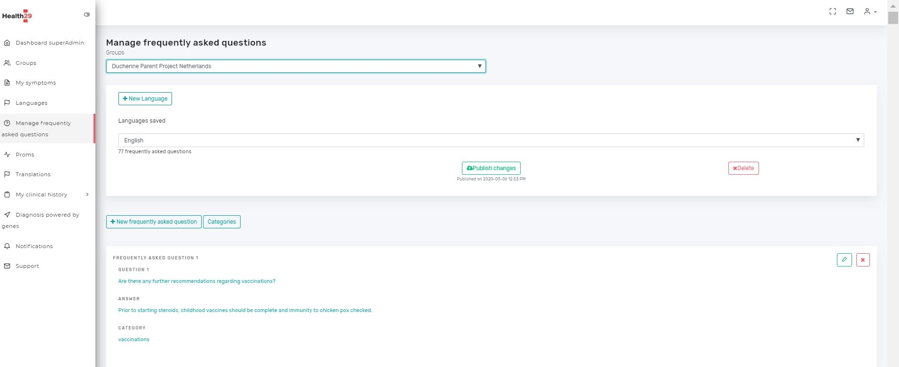
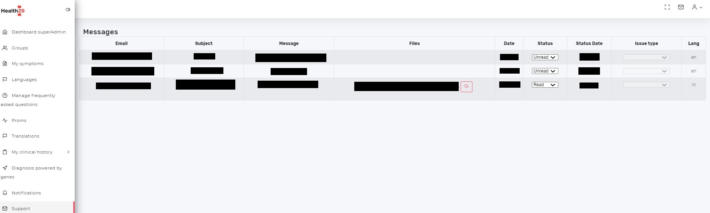

3. Superadmin profile¶
A super-administrator profile for the platform has been implemented. With this profile, some aspects of the platform can be managed visually or through a graphic environment so as not to depend on programmers directly.
With this profile it is possible to control and manage the needs that arise in the platform to incorporate new elements or to modify an existing one, without requiring programming. Therefore, when implementing new functions it is important to evaluate if what is being added will be configurable or modifiable, and in that case it is important to define the functionality in the most generic way possible and to add the control of this in the super-administrator role.
This profile will have control over all patient groups that have been incorporated into Healht29.
In order to better understand what has been explained here, the current list of actions that can be performed from this profile on the platform will be presented in this section. With this, we can already get an idea of the usefulness of this profile and the possibilities within the tool.
Next, this section will be subdivided into different sections to develop in depth each of the functionalities available for this profile in Health29.
These functionalities will be present in the navigation menu of the left panel of the platform for the superadmin role.
The implementation of the code for the functionalities of this profile is done in the same way as explained in section 2.4 of this document.
3.1. Manage groups¶
The first menu option of this profile is: “Groups”.
This page shows a table with the information:
Name of the patient group included in Health29
Patient Group Manager
Type of subscription.
Here, you can change any of the above fields or delete groups.
3.2. Manage symptoms¶
This page manages the symptoms of each patient group.
By selecting a particular patient group, the associated symptoms are shown:
You can add new or remove existing ones.
3.3. Manage languages¶
The list of languages in which the platform is available is shown and allows you to add new
3.4. Manage Frequently asked questions¶
On this page you can manage the platform’s frequently asked questions, visible to users from the FAQs section or those that the healthbot works with. This page allows you to interact directly with the knowledge bases created in Qna maker, so that you can add, delete or update frequently asked questions.
As already explained in the architecture section of this document, each group of patients will have a knowledge base for each available language. So, first you have to select the patient group you want to modify or add this to:
There are several actions that can be performed on each available FAQ collection:
Download logs
Publish changes. For each update or modification made on the FAQs of a collection it will be necessary to publish the changes so that this is visible to the users of the patient group.
Delete. To delete a complete collection.
In addition, each question-answer pair is encapsulated within a category.Thus, multiple question-answer pairs can belong to one category.In addition, each question-answer pair can belong to several categories.Thus, the general structure of a FAQ would consist of:
A set of questions
Only oneanswer
One or more categories
Each collection of FAQs will have a list of available categories that can be expanded. These categories can beviewed by clicking on the “Categories” button. Then, a popup will then be shown with the list of available categories and from here you can delete these categories by pressing the “X” button that appears next to each one of them.
Within a collection you can perform the following actions for the FAQs it contains:create a new FAQ, edit an existing FAQand delete a FAQ.But in any case, all these changes will not be visible to users until the changes to the collection are published.We will now explain how to perform each of these actions.
3.4.1. Add new FAQ¶
Click on “New frequently asked question” button and a new page will appear:

Write the question and the answerand associate this FAQ to a categoryand click “Save”.If you want to add more questions for the same answer (recommended), click on“Add alternative question” button and write it in the text box.
To associate the FAQ with a category, type the name of the category in the corresponding text field. As long as you enter this name, the existing categories in the FAQ collection of the particular language will appear as suggestions. You can select the suggested category by clicking on it to associate it with the new FAQand remove the association between this category and this FAQusing the “X” next to it. If the category you want to add is not yet included in the FAQ collection you are working on, it will be indicated as “Click to add the new category: category_name”. By clicking on this button, this new category will be added to the collection you are working on and will be associated with the FAQ you are creating. As before, you can remove this association with the new FAQ with the “X”next to it.
3.4.2. Edit a FAQ¶
Press the edit button of one of the existing FAQs in a collection and a page like the one to create a new FAQ will be shown, but with the content of the FAQ selected to be edited.
The data can be modified in the same way as when creating a new FAQ.
3.4.3. Delete a FAQ¶
Press the deletebutton of one of the existing FAQs in a collection and a required confirmation popup will appear.
Selecting “Delete” will remove the FAQ from the collection
Selecting “No,cancel” will cancel the operation and will not remove the FAQ from the collection.
3.5. Manage datapoints/proms¶
In this section you can manage the datapoints of each group of patients of the platform, that is, the content of the Course of the disease (CoD) section of the user profile.
As in the previous sections, the first thing to do is to choose the group of patients you want to work with
Initially, the table on the right will appear, indicating the sections of the CoD page that will be presented to the user. This is the internal navigation menu of this section or the contents that make it up.
From here we can manage these sections: add new, edit or delete existing ones.
The action of deleting requires confirmation, so when pressing the X button of a section a popup will appear to be able to cancel the operation or continue with it.
The actions of adding or editing will open a popup showing the configurable fields: the name, a description, the order in which it will appear for the users regarding the rest of the sections and “enabled section”, that is, if it will be visible or not.
Besides this, for each section there is an icon in the “Proms” column. What this does is to show the table on the right, that is, the datapoints that will be included in each section.
Here again you can add, edit or remove datapoints from a section. And these will also be assigned an order of appearance within the section they belong to.
For the definition of a new datapoint you will have to indicate at least:
The name or an identifier
The question field that will be the label or the content that will accompany the datapoint
The order
The size: small, normal, medium or large, with which it will be represented on the screen.
There is a requirement in the form of implementation used in Health29: the first datapoint will correspond to a question that will be asked initially to the user in each section. This is important for the calculation of statistics: it is not the same as a patient not answering or indicating that he or she does not have something.
According to what you have answered in this question, several things will happen in the presentation in the user profile:
If you have not answered or the answer is negative, the rest of the section content will not be shown (the rest of the datapoints will be hidden)
If you have answered yes, then the rest of the datapoints will be visible.
This behavior is achieved as follows:
The first datapoint must always be assigned the name: “Question” or “Options” and must always correspond to the question explained in the previous paragraph.
The rest of the datapoints must have the field “Related to” assigned to the first datapoint.
In the following image there is a list of the different types of datapoints that have been implemented so far in Health29, or what is the same, the different types of fillable fields can be used in the users’ CoD section. On the one hand we have specific types such as “Title” or “Date”, and on the other hand we have designed combinations between them.
Finally, you can define the translations of these fields by pressing the “Translations” button where, by choosing the group of patients and one of the languages available on the platform, you can modify the text corresponding to each datapoint or section.
3.6. Manage translations¶
In this section you can modify the translations of the texts present in the Health29 platform. You can choose the language in which the original text will be shown, and the language in which you want to modify the translation.
3.7. Manage information about clinical history¶
In this section you can manage the relevant aspects of the clinical information of the patient groups.
At the moment it consists of a single section: Medication.
It includes for each patient group the medicines, the side effects and the adverse effects associated with their diagnosis. What is included in this section is the content that will appear on the Drugs page of the users of a patient group.

Here you can add, edit or delete individual medications and side/adverse effects.
The deletion of any element requires confirmation, that is, when you press the “X” of a drug, a side effect or an adverse effect a popup is displayed indicating that the element is going to be deleted and whether you want to confirm or cancel the operation. In addition, a button has been included in drugs and side effects to remove all items that also require confirmation.
The first time you access it, a field appears on the right to add new elements: drugs, side effects or adverse effects.
Thus, when you want to add a drug, the section on the right shows the fields to be filled in:
First name or identifier and other text fields for translations in the different languages available on the platform.
A selectable field to choose the side effects related to this drug.
For the side effects and adverse effects you only have to fill in the text fields related to the identifier and the languages.
When you select the edition of a drug, a side effect or an adverse effect, these fields appear in an analogous way for each case in the section on the right but with the information of the selected element. The fields can be modified and by pressing the “Update” button the values will be updated. Once the changes have been confirmed, you will return to the screen to add new element.
3.8. Manage notifications¶
From this page the superadministrator will be able to create notifications to be sent to all users of a selected patient group.
Here you can add, edit or delete notifications.
Deleting will require confirmation, and creating or editing one will open a new page where the specified fields will have to be filled in:
The general architecture of a notification will be:
Type: Notifications of the administrator type or patient group or periodical (6 or 12 months).
Launch date: The date from which the notification will be launched
Identifier: a number, word or short text to identify the notification.
Title and text: By selecting add translations and the languages in which you want to display the notification, these fields appear for each language. The title is a brief description to identify the notification in the subscriptions view, and the text is what will appear in the user notification window.
URL. This field is not mandatory, it allows to add an external URL to appear in the notification to the users or an internar URL with “#” and name of the section. It will be composed by the URL and a title that will appear in the button that the users will see next to the notification.
3.9. Support¶
When users or administrators of a patient group send a message to support, it will be displayed on this page.
The information is displayed in table format:
The email address of the user or administrator who sent the message
A message subject
The content or text
The files in the case of any attachments
The date of the message
The state: unread, read and solved.
The status update date
The type of issue, if applicable.
The language